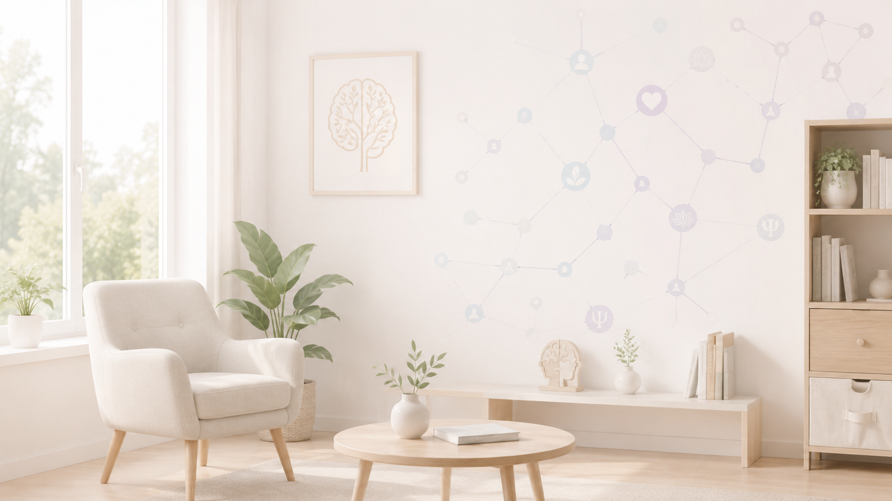

Ferramentas Clínicas Inteligentes
Técnicas terapêuticas, exercícios, estratégias emocionais e recursos clínicos desenvolvidos para utilização prática durante sessões psicológicas.
Respiração Diafragmática
Exercício utilizado para redução fisiológica da ansiedade e ativação do sistema parassimpático.
Reestruturação Cognitiva
Técnica central da Terapia Cognitivo-Comportamental voltada para pensamentos automáticos.
Roda das Emoções
Ferramenta visual para ampliação do repertório emocional e expressão afetiva durante sessões.
Grounding 5-4-3-2-1
Técnica de ancoragem sensorial utilizada em ansiedade, dissociação e crises emocionais.
Construção de Autoestima
Exercícios terapêuticos voltados para fortalecimento emocional, identidade e autocompaixão.
Escala de Ansiedade
Ferramenta subjetiva utilizada para monitoramento clínico da intensidade da ansiedade.